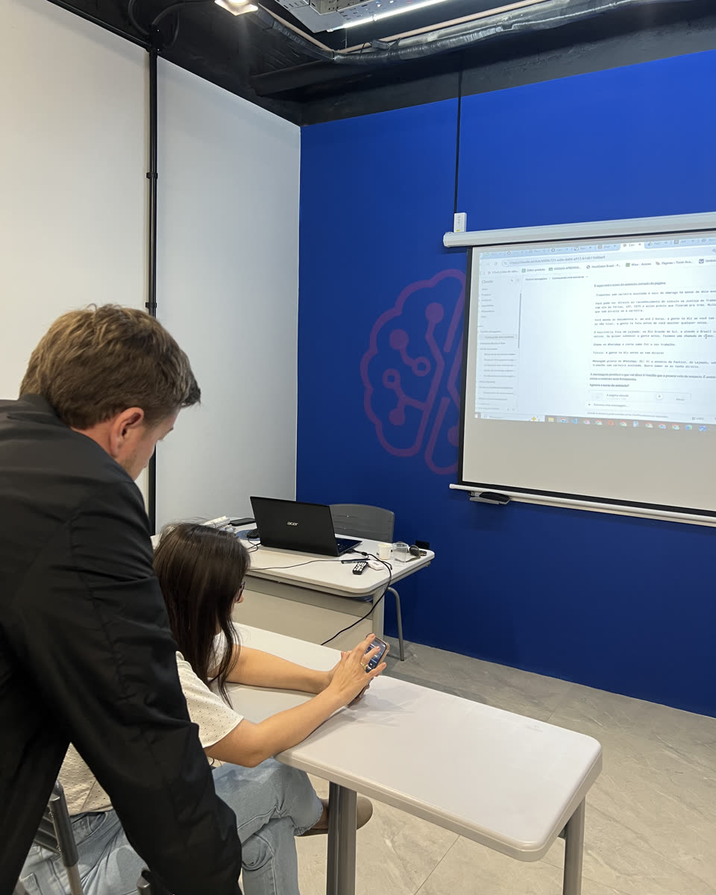
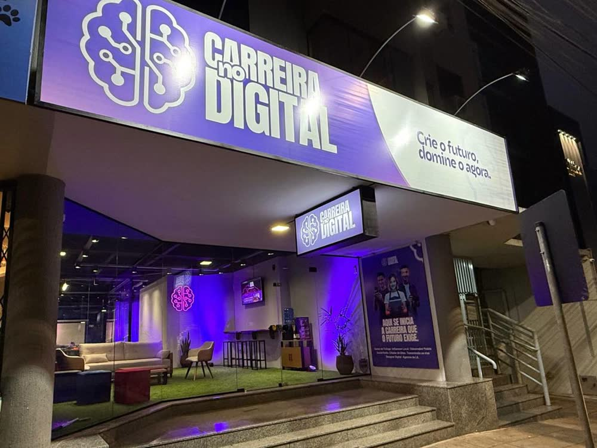
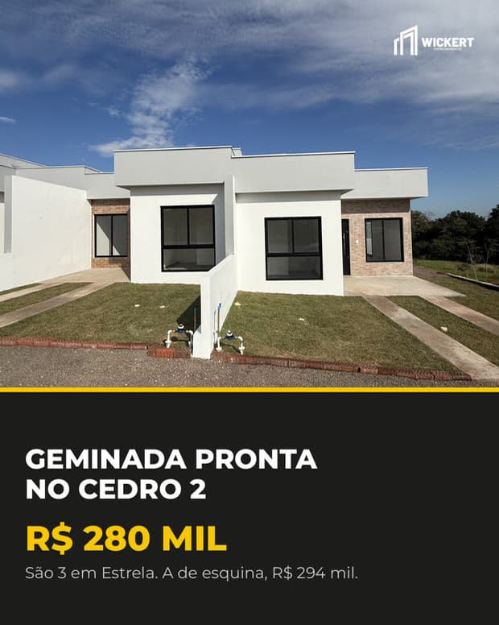
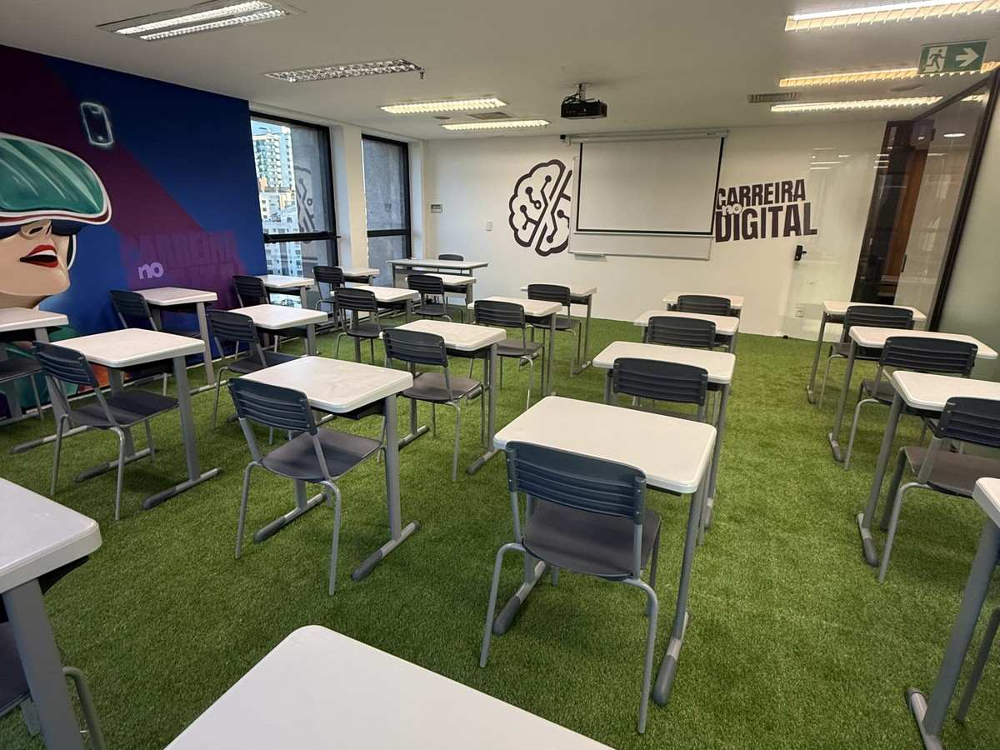

Edita os teus vídeos
Corta as pausas, põe legenda, a tua marca e as tuas cores.
Pra empresários, autônomos e prestadores de serviço que querem atrair mais clientes e vender mais. Com quem sabe do teu lado, em turma pequena, e agora com a inteligência artificial trabalhando junto.


Antes de comprar, as pessoas pesquisam no Instagram, no Google e no WhatsApp. Aparecer bem ali exigia agência, editor de vídeo e designer. Hoje, o dono do negócio grava no celular e a inteligência artificial faz o resto. Quem aprende a usar isso primeiro, vende mais.
Uma escola criada pra quem tem algo pra vender e quer usar o digital pra vender mais, aplicando no próprio negócio, com quem faz isso todo dia.
É isso que o Deu Venda monta no teu negócio: uma máquina de marketing com IA, que já conhece a tua estratégia e a tua marca. Tudo isso saiu de negócios daqui, nas nossas salas.
Corta as pausas, põe legenda, a tua marca e as tuas cores.

Posts, anúncios e as páginas da tua empresa, no padrão da tua marca.
Roteiro, vídeo e a campanha no Facebook e no Instagram, direto pelo Claude.
Cada contato que chega no WhatsApp vira conversa de venda.
Da turma presencial ao acompanhamento um a um, até o negócio organizado no dia a dia com o sistema.
3 encontros presenciais, turma pequena, pra montar a tua máquina de IA e sair com a campanha no ar.
Um a um com o especialista: a máquina montada só pro teu negócio, com acompanhamento até a estratégia acertar.
O sistema de vendas do teu negócio: nenhum contato perdido, e o resultado medido todo mês.

Chama a gente no WhatsApp: a gente entende o teu negócio e te mostra o caminho certo.